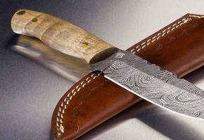

As facas M16c2 são feitas de aço Carbono 1050, uma explicação sobre este tipo de aço é a principal
característica, como o próprio nome indica, na quantidade de carbono na liga, que normalmente pode
variar de 0,6% a 1% , para os aços apropriados à cutelaria (e possuem baixíssima concentração de outros
elementos). Existem vários tipos de aço, com diferentes percentagens de carbono e outros elementos, e a
tabela SAE (Society of Automotive Engenieers) é a mais utilizada para classificá-los.
Faca de aço inoxidavel.
Aço inoxidavel
As facas INX70 são feitas de aço inoxidavel 70, uma explicação sobre este tipo de aço é a principal
característica, esta "família" de aços, está na quantidade elevada de Cromo em sua liga, que forma uma
espécie de "película" mais resistente à oxidação. Normalmente é um aço menos "maleável" e mais sujeito
a quebrar, que o aço carbono. Também, por ter mais Cromo em sua composição, tende a perder o fio mais
rapidamente e, normalmente, são mais difíceis de afiar (alguns tipos podem ser mais fáceis de afiar).
Ainda assim, têm uma boa aceitação para tarefas cotidianas, que não envolvam uso pesado, afinal requer
um menor cuidado.

Faca de aço damasco.
Aço damasco
As facas SR71 são feitas de aço damasco, este tipo de aço é a união de dois ou mais aços de
características diferentes, unidos pelo método de caldeamento. Uma barra de damasco pode ter várias camadas,
que podem variar de 50 a 600. A grande vantagem do damasco, além da beleza da lâmina, é a flexibilidade
que ele proporciona, pois geralmente o cuteleiro que forja damasco mistura um aço de alto teor de carbono
com um de médio a baixo teor de carbono. É de difícil obtenção, o que faz encarecer o produto, porém é
muito valorizado por colecionadores. Espadas samurais continham até 1000 camadas.